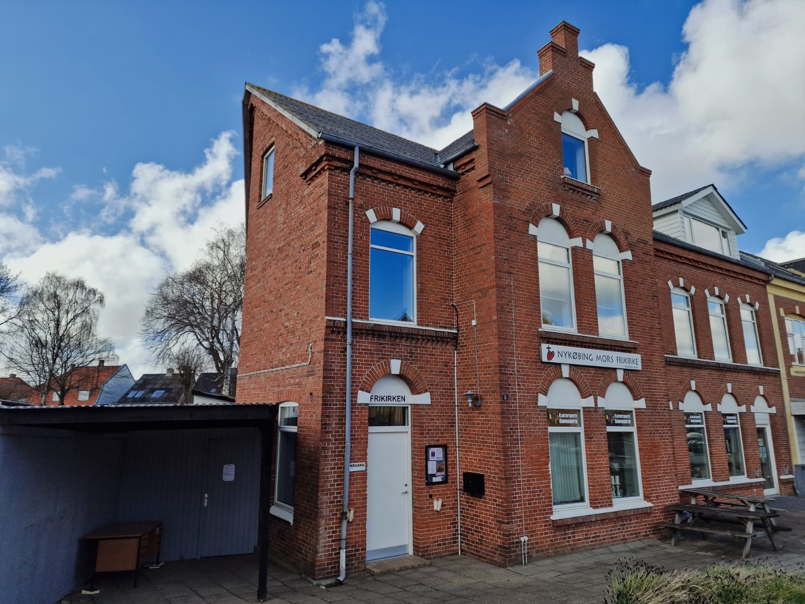
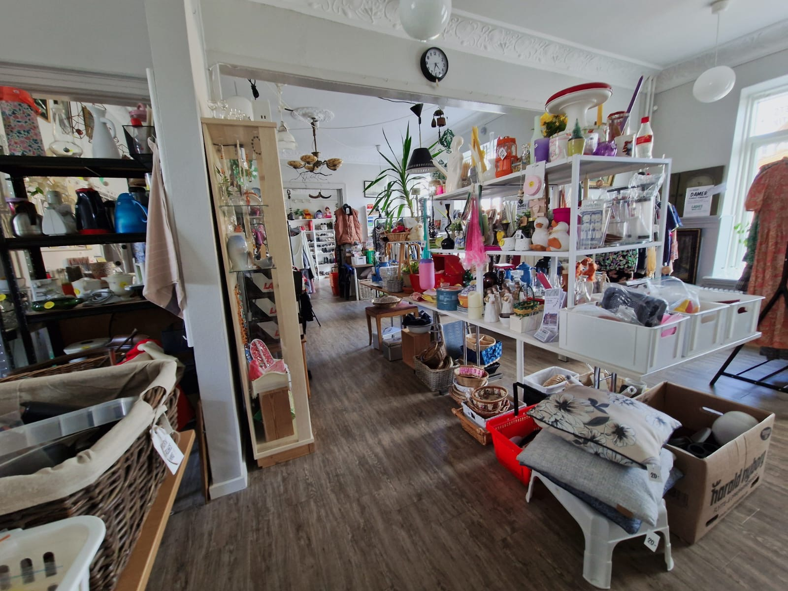
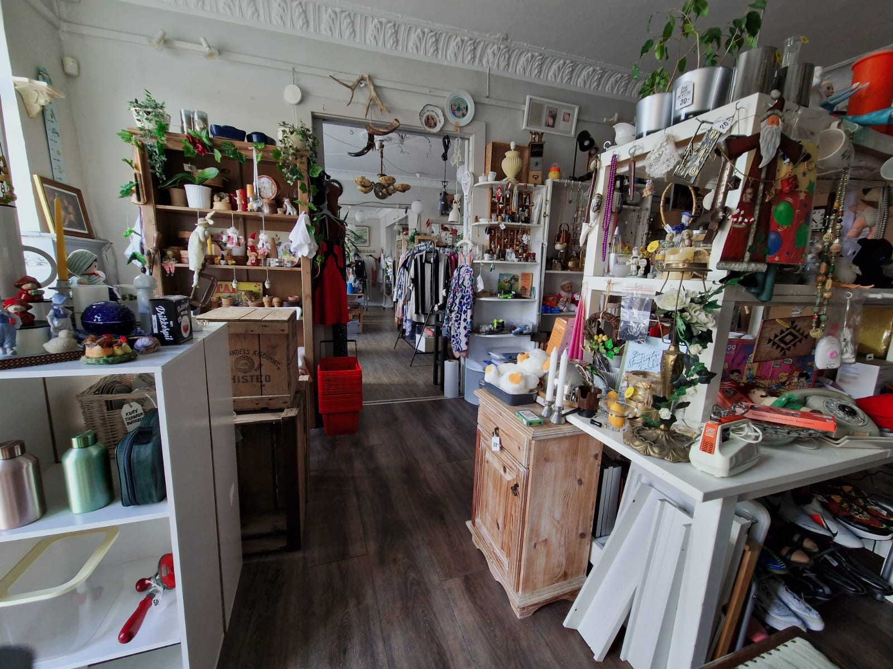
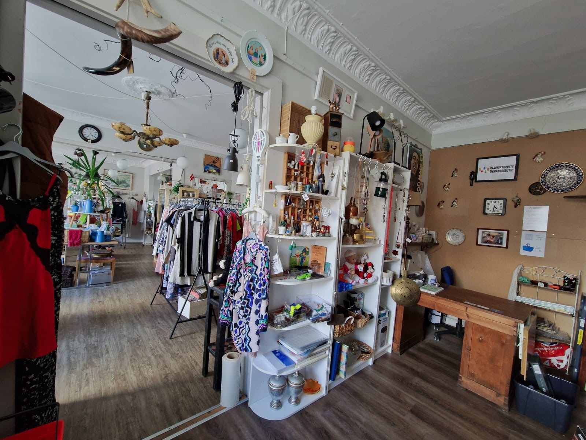
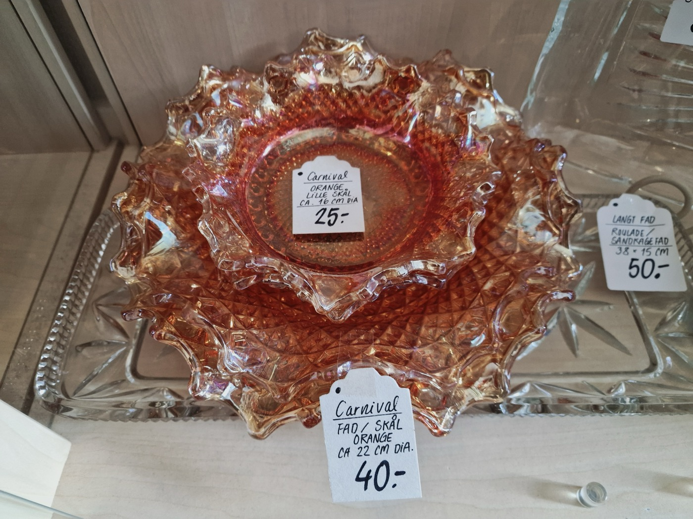
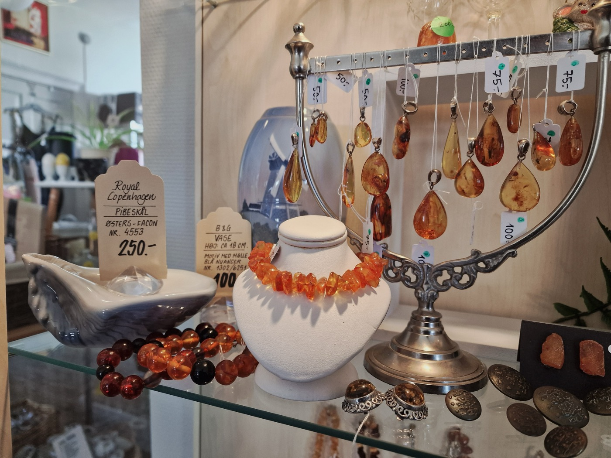
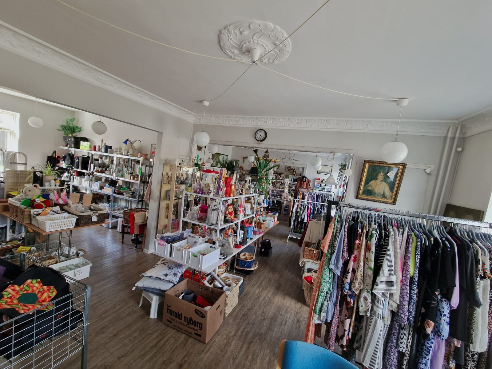
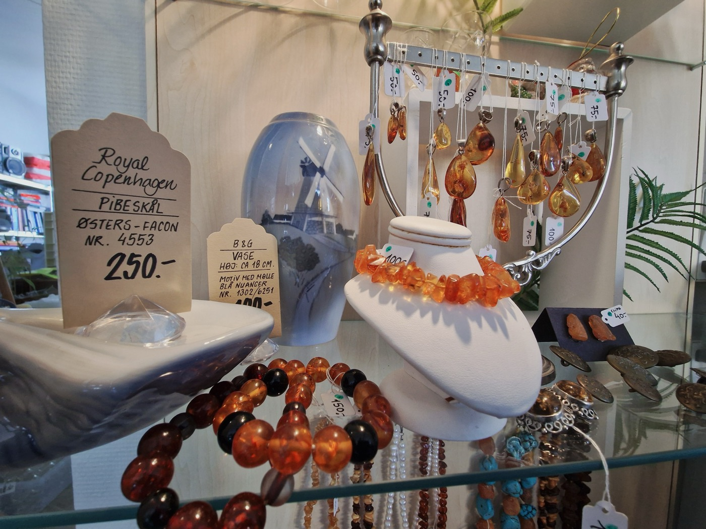
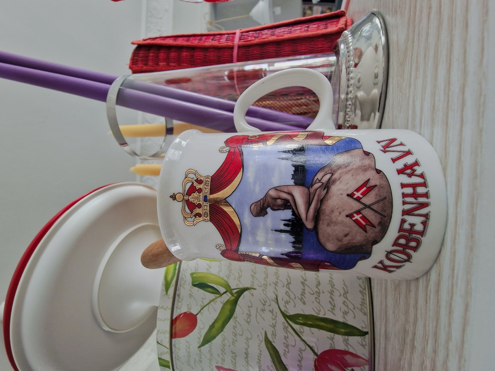
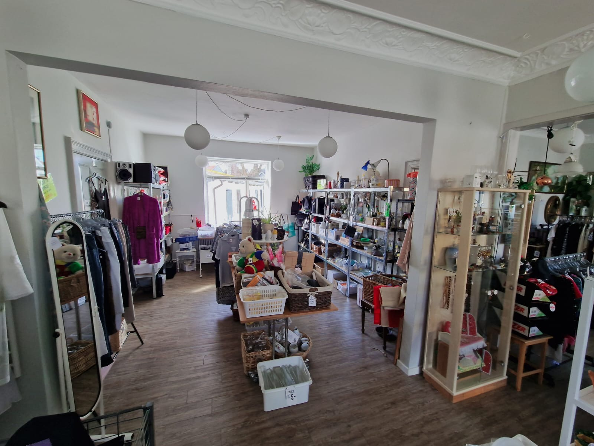

Vores butik i hjertet af Nykøbing Mors
Vores genbrugsbutik er en vigtig del af kirkens liv og arbejde. Her finder du et stort udvalg af tøj, ting til hjemmet og mange andre gode fund, alt sammen til overkommelige og attraktive priser. Overskuddet går udelukkende til at støtte kirkens velgørende arbejde, både lokalt og internationalt. Kom og besøg os, støt vores arbejde… og måske finder du din næste lille skat!








